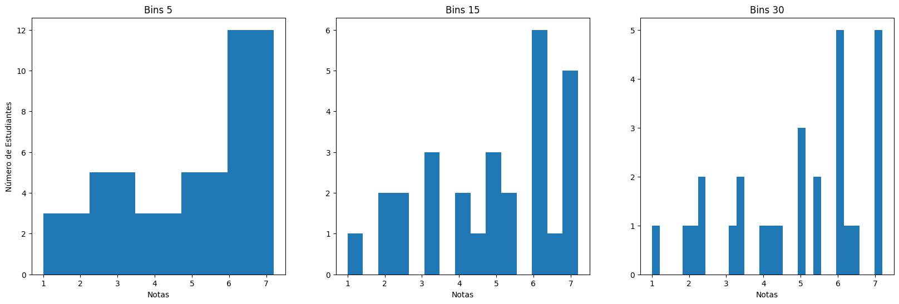

import matplotlib.pyplot as plt
import numpy as np
a = np.array([4.5, 4, 4.1, 1, 2.3, 2.2, 2.4, 5, 5.5, 6.2, 6, 6, 6, 6])
b = np.append(a, a + 1)
fig = plt.figure(figsize=(20, 6))
ax = fig.subplot_mosaic("ABC")
ax["A"].hist(b, bins=5)
ax["A"].set_title("Bins 5")
ax["A"].set_xlabel("Notas")
ax["A"].set_ylabel("Número de Estudiantes")
ax["B"].hist(b, bins=15)
ax["B"].set_title("Bins 15")
ax["B"].set_xlabel("Notas")
ax["C"].hist(b, bins=30)
ax["C"].set_title("Bins 30")
ax["C"].set_xlabel("Notas")
plt.show()